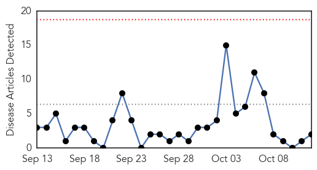
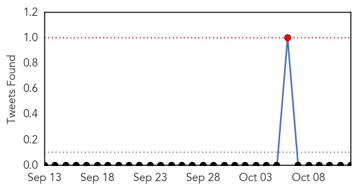
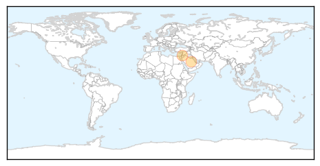
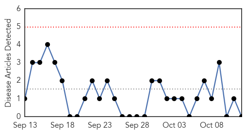
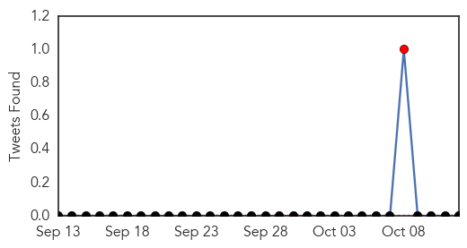

MERS
30-Day Web Trend
0 alerts, 0 warnings

30-Day Twitter Trend
0 alerts, 0 warnings

Article Locations
Article Confidences

Top Articles:
Top Tweets:
- 0.669
- AFD blog `Korean Govt. Statement On MERS Patient `Relapse’ and Isolation' MERS-CoV http://t.co/X3Ptg4EdPf h/t
- 0.634
- AFD Blog `Riyadh Reports 3rd MERS Case In 3 Days & @WHO Saudi Update' MERS-CoV http://t.co/JferC6ju4W
- 0.521
- AFD Blog `WHO On Jordan’s Latest MERS Case' MERS-CoV http://t.co/wKWwECjZFK
Pertussis
30-Day Web Trend
0 alerts, 0 warnings

30-Day Twitter Trend
1 alerts, 0 warnings

Article Locations

Article Confidences

Top Articles:
-
No articles found for Oct 12, 2015
Top Tweets:
-
No tweets found for Oct 12, 2015